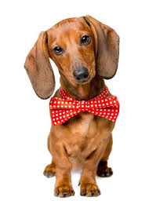
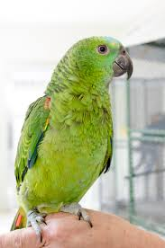

BEM VINDOS AO NOSSO CLUBE CADASTRE-SE AQUI
Os animais de estimação mais populares em todo o mundo são os cães e os gatos, embora existam muitos outros, como roedores, aves, peixes (aquariofilia) e, embora menos populares, também répteis, anfíbios e invertebrados.
Grande pequeno amigo
Animal de estimação amigo perfeito
Os animais necessitam de carinho
Caminhe com seu animal de estimação.
Para muito de nós os animais de estimação não são simples companheiros, e sim membros da família.

Max
Jerry
Tom
